Environmental Adaptation · Level 0
Permanently adapts the Psychonaut to the hostile environment of its Rapture, even in Focus.
HOMO DEGENESIS
Sepsis · Chakras · Rapture
KatharSys pp. 282–287
Psychonauts are born into Sepsis. The mycelium enters the womb, becomes part of the developing nervous system, and eventually turns one Chakra into the dominant center of a new human branch. Childhood may seem merely strange at first—unnatural resilience, cold resistance, odd appetites—until the first uncontrolled Phenomenon reveals what the child is becoming.
Each Rapture expresses one Earth Chakra through a different dominant Attribute, plague, and family of Phenomena. The other Chakras are effectively burned out. The Psychonaut’s nervous system and the surrounding mycelial network operate together: without spore infestation, the great Phenomena cannot be discharged.
Every Rapture also surrounds itself with a characteristic plague. These creatures are not just pets or weapons; they are part of the same network of signals that links Psychonauts to their Earth Chakras.

POLLEN · FIRST RAPTURE
The Fleshformers · Body · Spiders · scorpions · centipedes

BALKHAN · SECOND RAPTURE
The Voice of Decay · Instinct · Bog Krakens · jellyfish · crabs · bats
FRANKA · THIRD RAPTURE
Queens of the Swarm · Charisma · Ants · wasps · termites
HYBRISPANIA · FOURTH RAPTURE
Beyond Time · Intellect · Shells · starfish · urchins · ammonites · trilobites
PURGARE · FIFTH RAPTURE
Masters of the Elements · Psyche · Fleas · mosquitoes · leeches · bugs · tapeworms
The maximum spore infestation intertwined with a Psychonaut is (INS + Primal) × 2. In the Primal phase, remaining spore infestation acts as the Action Number for Phenomena. The Phenomenon level is its Difficulty. Overload strengthens the effect but consumes spore infestation, reducing future Action Numbers.
When infestation reaches zero, the Psychonaut enters the Focus phase. Primal gives way to INT+Focus, Ego Points become available again, and the Psychonaut experiences ordinary reality as an alien, empty place until Sepsis or Burn reconnects them to the collective.
Permanently adapts the Psychonaut to the hostile environment of its Rapture, even in Focus.
Overload directly amplifies the dominant Attribute; each Rapture defines the secondary effects.
At sufficient infestation the Chakra absorbs pain, removing Trauma penalties.
Sends a silent distress signal through the network to nearby Aberrants and sufficiently infested humans.
Psychonauts are dangerous anywhere, but spore fields actively replenish them. At the start of every Combat Round they recover +1 spore infestation in a spore field, +2 in a Mother spore field, and +3 at their Earth Chakra. Strong discharges leave geometric scars in dust, vegetation, and terrain that can identify the responsible Rapture long after the event.